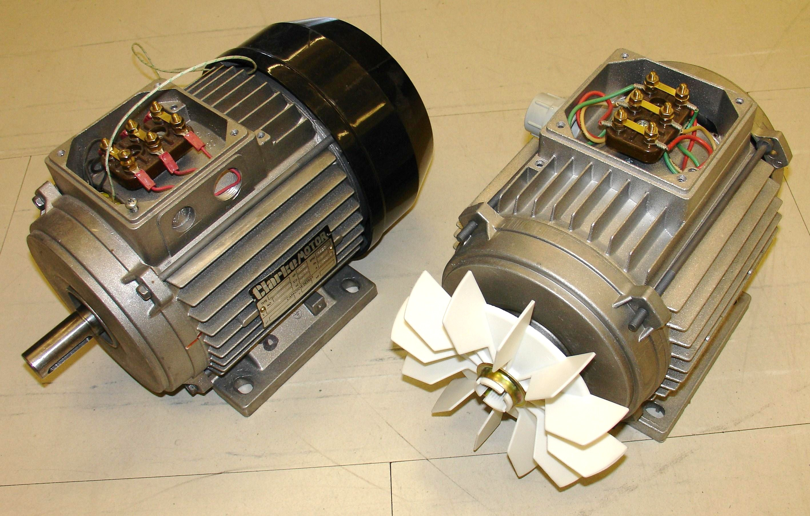

In electrical engineering, electric machine is a general term for machines using electromagnetic forces, such as electric motors, electric generators, and others. They are electromechanical energy converters: an electric motor converts electricity to mechanical power while an electric generator converts mechanical power to electricity. The moving parts in a machine can be rotating (rotating machines) or linear (linear machines).
Besides motors and generators, a third category often included is transformers, which although they do not have any moving parts are also energy converters, changing the voltage level of an alternating current.
Electric machines, in the form of generators, produce virtually all electric power on Earth, and in the form of electric motors consume approximately 60% of all electric power produced. Electric machines were developed beginning in the mid 19th century and since that time have been a ubiquitous component of the infrastructure. Developing more efficient electric machine technology is crucial to any global conservation, green energy, or alternative energy strategy.
An electric generator is a device that converts mechanical energy to electrical energy. A generator forces electrons to flow through an external electrical circuit. It is somewhat analogous to a water pump, which creates a flow of water but does not create the water inside. The source of mechanical energy, the prime mover, may be a reciprocating or turbine steam engine, water falling through a turbine or waterwheel, an internal combustion engine, a wind turbine, a hand crank, compressed air or any other source of mechanical energy.
The two main parts of an electrical machine can be described in either mechanical or electrical terms. In mechanical terms, the rotor is the rotating part, and the stator is the stationary part of an electrical machine. In electrical terms, the armature is the power-producing component and the field is the magnetic field component of an electrical machine. The armature can be on either the rotor or the stator. The magnetic field can be provided by either electromagnets or permanent magnets mounted on either the rotor or the stator. Generators are classified into two types, AC generators and DC generators.
AC Generator
An AC generator converts mechanical energy into alternating current electricity. Because power transferred into the field circuit is much less than power transferred into the armature circuit, AC generators nearly always have the field winding on the rotor and the armature winding on the stator.
AC generators are classified into several types.
- In an induction generator, the stator magnetic flux induces currents in the rotor. The prime mover then drives the rotor above the synchronous speed, causing the opposing rotor flux to cut the stator coils producing active current in the stater coils, thus sending power back to the electrical grid.
- In a Synchronous generator (alternator), the current for the magnetic field is provided by a separate DC current source.
DC Generator
A DC generator is a machine that converts mechanical energy into Direct Current electrical energy. A DC generator generally has a commutator with split ring to produce a direct current instead of an alternating current.
An electric motor converts electrical energy into mechanical energy. The reverse process of electrical generators, most electric motors operate through interacting magnetic fields and current-carrying conductors to generate rotational force. Motors and generators have many similarities and many types of electric motors can be run as generators, and vice versa. Electric motors are found in applications as diverse as industrial fans, blowers and pumps, machine tools, household appliances, power tools, and disk drives. They may be powered by direct current or by alternating current which leads to the two main classifications: AC motors and DC motors.

AC Motor
An AC motor converts alternating current into mechanical energy. It commonly consists of two basic parts, an outside stationary stator having coils supplied with alternating current to produce a rotating magnetic field, and an inside rotor attached to the output shaft that is given a torque by the rotating field. The two main types of AC motors are distinguished by the type of rotor used.
-
Induction (asynchronous) motor, the rotor magnetic field is created by an induced current. The rotor must turn slightly slower (or faster) than the stator magnetic field to provide the induced current. There are three types of induction motor rotors, which are squirrel-cage rotor, wound rotor and solid core rotor.
-
Synchronous motor, it does not rely on induction and so can rotate exactly at the supply frequency or sub-multiple. The magnetic field of the rotor is either generated by direct current delivered through slip rings (exciter) or by a permanent magnet.
DC Motor
The brushed DC electric motor generates torque directly from DC power supplied to the motor by using internal commutation, stationary permanent magnets, and rotating electrical magnets. Brushes and springs carry the electric current from the commutator to the spinning wire windings of the rotor inside the motor. Brushless DC motors use a rotating permanent magnet in the rotor, and stationary electrical magnets on the motor housing. A motor controller converts DC to AC. This design is simpler than that of brushed motors because it eliminates the complication of transferring power from outside the motor to the spinning rotor. An example of a brushless, synchronous DC motor is a stepper motor which can divide a full rotation into a large number of steps.
A transformer is a static device that converts alternating current from one voltage level to another level (higher or lower), or to the same level, without changing the frequency. A transformer transfers electrical energy from one circuit to another through inductively coupled conductors—the transformer's coils. A varying electric current in the first or primary winding creates a varying magnetic flux in the transformer's core and thus a varying magnetic field through the secondary winding. This varying magnetic field induces a varying electromotive force (emf) or "voltage" in the secondary winding. This effect is called mutual induction.
There are three types of transformers :-
- Step-up transformer
- Step-down transformer
- Isolation transformer
There are four types of transformers based on structure
- core type
- shell type
- power type
- instrument type
Electromagnetic-rotor machines
Electromagnetic-rotor machines are machines having some kind of electric current in the rotor which creates a magnetic field which interacts with the stator windings. The rotor current can be the internal current in a permanent magnet (PM machine), a current supplied to the rotor through brushes (Brushed machine) or a current set up in closed rotor windings by a varying magnetic field (Induction machine).
Permanent magnet machines
PM machines have permanent magnets in the rotor which set up a magnetic field. The magnetomotive force in a PM (caused by orbiting electrons with aligned spin) is generally much higher than what is possible in a copper coil. The copper coil can, however, be filled with a ferromagnetic material, which gives the coil much lower magnetic reluctance. Still the magnetic field created by modern PMs (Neodymium magnets) is stronger, which means that PM machines have a better torque/volume and torque/weight ratio than machines with rotor coils under continuous operation. This may change with introduction of superconductors in rotor.
Brushed machines
Brushed machines are machines where the rotor coil is supplied with current through brushes in much the same way as current is supplied to the car in an electric slot car track. More durable brushes can be made of graphite or liquid metal. It is even possible to eliminate the brushes in a "brushed machine" by using a part of rotor and stator as a transformer which transfer current without creating torque. Brushes must not be confused with a commutator. The difference is that the brushes only transfer electric current to a moving rotor while a commutator also provide switching of the current direction.
Induction machines
Induction machines have short circuited rotor coils where a current is set up and maintained by induction. This requires that the rotor rotates at other than synchronous speed, so that the rotor coils are subjected to a varying magnetic field created by the stator coils. An induction machine is an asynchronous machine.
Induction eliminates the need for brushes which is usually a weak part in an electric machine. It also allows designs which make it very easy to manufacture the rotor. A metal cylinder will work as rotor, but to improve efficiency a "squirrel cage" rotor or a rotor with closed windings is usually used.
Reluctance machines have no windings on the rotor, only a ferromagnetic material shaped so that "electromagnets" in stator can "grab" the teeth in rotor and advance it a little. The electromagnets are then turned off, while another set of electromagnets is turned on to move rotor further. Another name is step motor, and it is suited for low speed and accurate position control. Reluctance machines can be supplied with permanent magnets in the stator to improve performance.
In electrostatic machines, torque is created by attraction or repulsion of electric charge in rotor and stator.
Electrostatic generators generate electricity by building up electric charge. Early types were friction machines, later ones were influence machines that worked by electrostatic induction. The Van de Graaff generator is an electrostatic generator still used in research today.
Homopolar machines are true DC machines where current is supplied to a spinning wheel through brushes. The wheel is inserted in a magnetic field, and torque is created as the current travels from the edge to the centre of the wheel through the magnetic field.